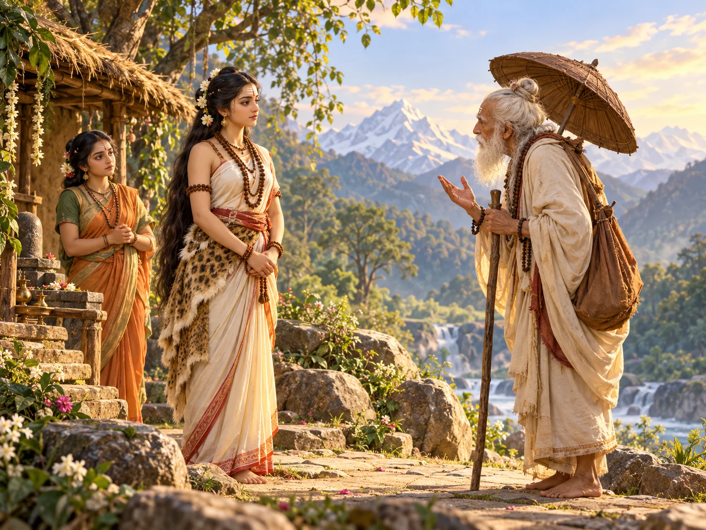

हिन्दी · draft · human language review pending
पार्वती ने अपना मन क्यों नहीं बदला
वन में तप कर रहीं पार्वती से एक बुज़ुर्ग अतिथि ने शिव के बारे में कड़े सवाल किए। वह जवाब देकर जाने लगीं, तभी अतिथि का रूप बदल गया।

The image is a candidate. Both read-aloud durations are unmeasured for this language; the 3/6-minute labels are targets.
Short telling · timing pending
वन में तप करती पार्वती के पास एक बुज़ुर्ग तपस्वी आए। हाथ में छड़ी थी, साथ में छाता।
वे अनजान थे, फिर भी पार्वती ने अतिथि की तरह उनका स्वागत किया। हालचाल पूछा और आदर से बैठने को कहा।
तपस्वी ने पूछा कि राजकुमारी को इतना कठिन तप करने की क्या ज़रूरत है। पहले पार्वती की सखी ने बताया कि वह शिव को पति रूप में पाना चाहती हैं।
फिर पार्वती ने भी साफ कहा कि उनका मन उन्हीं में लगा है। तप कठिन है, यह वह जानती थीं; इसी कारण तो वन में रहकर साधना कर रही थीं।
तपस्वी बात सुनकर जाने लगे तो पार्वती ने उन्हें रोका और सलाह माँगी। उन्होंने उलटे शिव का रूप गिनाना शुरू किया।
शरीर पर भस्म, उलझी जटाएँ, गले में साँप, सवारी के लिए बैल! राजघराने में पली बेटी ऐसे वर को क्यों चुने, उन्होंने पूछा।
पार्वती ने भस्म या साँपों की बात झुठलाई नहीं। उन्होंने कहा कि सामने दिखने वाली चीज़ों से शिव को पूरा नहीं जाना जा सकता।
तपस्वी को भस्म अशुद्ध लगती थी; पार्वती ने पूछा कि देवता भी उसी भस्म को आदर से क्यों धारण करते हैं। उनके लिए शिव का अर्थ कपड़े, धन या कुल के नाम से कहीं बड़ा था।
तपस्वी दोबारा कुछ कहने लगे। पार्वती ने सखी से कहा कि अब शिव के विरुद्ध और बातें सुनने के लिए यहाँ नहीं रुकेंगी। वह वहाँ से चलने ही वाली थीं कि अतिथि ने उन्हें रोक लिया।
बुज़ुर्ग तपस्वी का रूप बदल गया। सामने स्वयं शिव थे।
वह पार्वती से मिलने और उनके निश्चय को परखने छद्म रूप में आए थे। अब उन्होंने अपनी पहचान प्रकट कर दी।
शिव ने इस परीक्षा के लिए क्षमा माँगी और पार्वती से स्नेह से बात की। पार्वती बहुत प्रसन्न हुईं। जिस व्यक्ति को पाने के लिए वह तप कर रही थीं, वही उनकी बात सुन रहा था; और वह उसके बाहरी रूप से बहुत आगे देख चुकी थीं।
Full telling · timing pending
राजमहल से दूर, वन में पार्वती तप कर रही थीं। उनका निश्चय था कि शिव को पति रूप में पाएँगी।
साधना लंबी और कठिन थी। उनकी एक सखी भी साथ रहती थी, जिसे उनका मन और उनकी चाह पता थी।
एक दिन वहाँ कोई अतिथि पहुँचा। उम्र में बहुत बड़े ब्राह्मण तपस्वी लगते थे।
हाथ में छड़ी थी और छाता भी था। चेहरे पर ऐसी चमक थी कि पार्वती ने उन्हें आते ही आदर से स्वीकार किया और कुशल पूछी।
अतिथि ने उलटे उनसे परिचय पूछा। राजघराने की युवती इस अकेले वन में क्यों तप कर रही है?
इतना कठिन काम किसलिए? उन्होंने पार्वती के प्रयत्न की प्रशंसा की, लेकिन प्रश्न बार-बार वहीं आकर टिकता रहा: वह आखिर चाहती क्या हैं?
पार्वती ने बताया कि वह पर्वतों के राजा की बेटी हैं। जब अतिथि ने मन की इच्छा पूछी तो उन्होंने पहले अपनी सखी को बोलने दिया।
सखी ने कहा कि पार्वती को शिव के सिवा कोई और पति नहीं चाहिए। इसी कामना से वह तप में लगी हैं।
तपस्वी ने कहा कि यह बात वह पार्वती के मुँह से सुनना चाहते हैं। पार्वती ने भी बिना झिझक अपना निश्चय बता दिया।
मन, वचन और कर्म से वह शिव को पाने की कोशिश कर रही थीं। यह आसान नहीं था; फिर भी साधना जारी थी।
तपस्वी ने तब जाने की बात की। पार्वती ने रोककर कहा कि यदि उन्हें कोई सलाह देनी हो तो वह सुनेंगी। अतिथि ठहर गए और बोले कि जिसको उन्होंने चुना है, उसके बारे में कुछ बातें जान लेनी चाहिए।
उन्होंने शिव की देह पर लगी भस्म की बात उठाई। जटाओं का, साँपों का, शरीर पर पहने हुए चर्म का वर्णन किया।
कहा कि उनका वाहन बैल है। वह आभूषणों और सुंदर वस्त्रों वाले राजकुमार जैसे नहीं दिखते।
फिर उन्होंने शिव के हाथ में रहने वाले कपाल और उनके साथ रहने वाले भयावह गणों का ज़िक्र किया। उनके जन्म या कुल का परिचय कौन देगा? एक ओर पर्वतराज की बेटी, दूसरी ओर ऐसा तपस्वी—अतिथि के अनुसार दोनों का मेल नहीं बैठता था।
पार्वती ने यह नहीं कहा कि शिव के शरीर पर भस्म नहीं है या उनके पास साँप नहीं हैं। यह सब वह जानती थीं।
लेकिन तपस्वी केवल इन्हीं चीज़ों को देखकर पूरे शिव का निर्णय सुना रहे थे। इस बात से वह सहमत नहीं थीं।
उन्होंने पूछा कि जिसे तपस्वी अशुद्ध भस्म कह रहे हैं, उसे देवता शिव की देह से लेकर आदर से क्यों लगाते हैं। कुल का नाम न बता पाना उनकी कमी कैसे हुआ? पार्वती के लिए शिव का वास्तविक स्वरूप इन बाहरी पहचान से बहुत बड़ा था।
पार्वती ने उन्हें संसार की उत्पत्ति, पालन और अंत से जुड़ा देव कहा। जो केवल वस्त्र और गहने देखे, वह उस शक्ति को कैसे पहचानेगा?
उनके शब्दों में नाराज़गी भी थी। शिव को पाने की इच्छा उन्होंने सोच-समझकर की थी; किसी ने उन्हें बहकाया नहीं था।
तपस्वी की लंबी सूची के बाद भी उनका मन नहीं बदला। शिव जिस रूप में रहें, पार्वती उन्हें ही अपना प्रिय मानती थीं।
बात कहकर वह शांत हुईं और उनका ध्यान करने लगीं। फिर अतिथि ने दोबारा बोलना चाहा।
पार्वती ने सखी की ओर देखा। शिव के विरुद्ध और बातें सुनने का उनका मन नहीं था।
उन्होंने कहा कि यहाँ से चलते हैं। जो कहना था, वह कह चुकी थीं; अब उसी अपमान को सुनते रहने की ज़रूरत नहीं समझीं।
पार्वती चलने लगीं तो अतिथि ने उन्हें रोका। अगले ही क्षण बुज़ुर्ग तपस्वी का छद्म रूप हट गया।
सामने शिव थे—वही, जिनके लिए पार्वती इतने दिनों से तप कर रही थीं। उन्हें देखकर पार्वती चुप खड़ी रह गईं।
शिव ने बताया कि वह उनसे मिलने आए थे और इस तरह उनके निश्चय को परखा। उन्होंने अपनी परीक्षा के लिए क्षमा भी माँगी।
पार्वती की अडिग चाह से वह प्रसन्न थे। अब वह स्वयं उनसे स्नेह से बोल रहे थे।
पार्वती को आनंद हुआ। जिस अतिथि ने उनके सामने बाहरी रूप की इतनी बातें रखीं, वही उनका चुना हुआ शिव निकला। पार्वती ने न भस्म को छिपाया, न जटाओं को; उन्होंने बस कहा कि किसी को जानना हो तो उसकी देह पर दिखने वाली चीज़ों से आगे भी देखना पड़ता है।
After the story
क्या कभी किसी के पहनावे को देखकर तुम्हारा विचार बना, फिर उससे बात करके बदल गया?
बाहर से दिखती बात सच हो सकती है, पर उससे पूरी पहचान नहीं बनती।
शिव ने अपना ही विरोध क्यों किया?
शिवपुराण के पार्वतीखंड २६.१–३ में वह पार्वती से मिलने और उनका तप परखने के लिए छद्म रूप लेते हैं। अध्याय २८.४६ में स्वयं इस परीक्षा के लिए क्षमा माँगते हैं।
पार्वती वहाँ से क्यों चलने लगीं?
वह अपना उत्तर दे चुकी थीं। जब अतिथि फिर शिव की निंदा करने लगे, तो पार्वती ने सखी से कहा कि अब और नहीं सुनेंगी। अध्याय २८.३३–४० में वह जाने को तैयार होती हैं।
क्या शिव के शरीर पर सचमुच भस्म थी?
अतिथि जिस रूप का वर्णन करते हैं, उसमें भस्म, जटाएँ और साँप हैं। पार्वती इन्हें झुठलाती नहीं हैं; उनका कहना है कि केवल बाहरी रूप से शिव को पूरा नहीं जाना जा सकता।